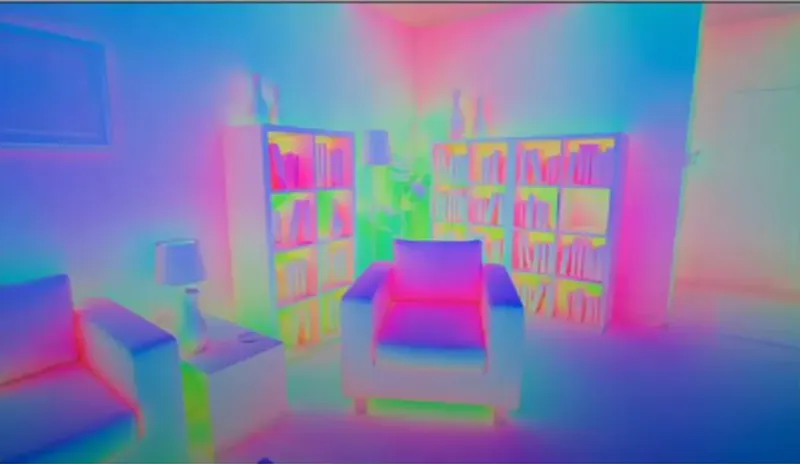

资源
- GAMES104-现代游戏引擎：从入门到实践_哔哩哔哩_bilibili
- GAMES104 - 现代游戏引擎入门必修课 (boomingtech.com)
- Piccolo 社区 - 游戏引擎爱好者的新家园 (piccoloengine.com)
- BoomingTech/Piccolo: Piccolo (formerly Pilot) – mini game engine for games104 (github.com)
- GAMES104：现代游戏引擎，从理论到实践 - 知乎 (zhihu.com)
课程
第二十一节：动态全局光照和 Lumen
Global Illumination (GI)
全局光照
The Rendering Equation
渲染方程
James Kajiya,”The Rendering Equation.”
SIGGRAPH 1986.
Energy equilibrium:
outgoing = emitted + reflected
Radiance and Irradiance 辐射和辐照度
这个方程揭示了渲染的规律。
Global Illumination: Billions of Light Source
全球照明：数十亿光源
然而，要计算渲染方程的积分可不容易，现实生活中的反射有无数次。
Global Illumination is Matter for Gaming
全局照明对游戏很重要
游戏中要加上一个全局照明以近似周围环境反射而来的光照效果。
Monte CarloIntegration
蒙特卡洛一体化
-
How to solve an integral, when it’s too hard to solve it analytically?
当一个积分很难解析求解时，如何求解它？
-
Approximate integral with the average of randomly sample values
随机样本值平均值的近似积分
Monte Carlo Ray Tracing (Offline)
蒙特卡罗射线追踪（离线）
使用蒙特卡洛算法求解渲染方程中的积分。
Sampling is the Key
采样是关键
-
Noise decreases as the number of samples per pixel increases. The top left shows 1sample per pixel, and doubles from left to right each square.
噪声随着每像素采样数的增加而降低。左上角显示每个像素 1 个样本，每个方格从左到右加倍。
Sampling : Uniform Sampling
取样：均匀取样
-
We are doing uniform random sample, so we have factor here
我们正在进行均匀随机采样，因此这里有因子
Probability Distribution Function
概率分布函数
Probability Distribution Function
概率分布函数
-
Describes the relative likehood for this random variable to take on a given value
描述此随机变量取给定值的相对可能性
-
Higher means more possible to be chosen
更高意味着更有可能被选择
Importance Sampling
重要性采样
The PDF can be arbitrary, but which is the best?
PDF 可以是任意的，但哪个是最好的？
Importance Sampling : Best PDF for Rendering?
重要性采样：最佳的 PDF 渲染？
-
Rendering equation:
渲染方程式：
-
Monte Carlo Integration:
蒙特卡洛积分：
-
What’s our f(x)?
-
What’s our pdf?
- Uniform:
- Other pdf? (cosine-weight, GGX)（余弦权重，GGX）
Importance Sampling : PDF is Matter
重要性采样：PDF 很重要
重要性采样比均匀采样渲染出的效果更好。
Importance Sampling: Cosine and GGX PDF
重要性采样：余弦和 GGX PDF
换一种 PDF 会产生不同的渲染效果。
Reflective Shadow Maps (RSM, 2005)
Let’s inject light in. (Photon Mapping?)
反射阴影贴图（RSM，2005）
让我们注入光线。（光子映射？）
-
Each pixel on the shadow map is a indirect light source
阴影贴图上的每个像素都是间接光源
-
How the RSM pixel illuminates position ?
RSM 像素 如何照亮位置 ？
-
The indirect irradiance at a surface point can be approximated by summing up the illumination due to all pixel lights.
表面点 处的间接辐照度可以通过将所有像素光的照度相加来近似。
-
Do not consider occlusion.
不要考虑遮挡。

Cone Tracing with RSM
使用 RSM 进行锥体追踪
-
Gathering Indirect Illumination
收集间接照明
-
random sampling RSM pixels
随机采样 RSM 像素
-
precompute such a sampling pattern and reuse it for all indirect light computations
预先计算这样的采样模式，并将其重新用于所有间接光计算
-
400samples were sufficient
400 个样本就足够了
-
use Poisson sampling to obtain a more even sample distribution
使用泊松采样获得更均匀的样本分布
-
-
Sampling pattern example. The sample density decreases and the sample weights (visualized by the disk radius) increases with the distance to the center.
采样模式示例。随着到中心的距离的增加，样品密度降低，样品重量（通过圆盘半径显示）增加。
Acceleration with Low-Res Indirect Illumination
低分辨率间接照明加速
-
Compute the indirect illumination for a low resolution image
计算低分辨率图像的间接照明
-
For each pixel on full resolution:
对于全分辨率的每个像素：
-
get its four surrounding low-res samples
获取其四个周围的低分辨率样本
-
validate by comparing normal and world space position
通过比较正常空间位置和世界空间位置进行验证
-
bi-linear interpolation
双线性插值
-
-
Recompute the left (red pixels)
重新计算左侧（红色像素）
Gears of War 4, Uncharted 4, The Last of US, etc.
《战争机器 4》、《神秘海域 4》、“最后的美国”等
Thanks, RSM
Cool Ideas
很酷的想法
-
Easy to be implemented
易于实施
-
Photon Injection with RSM
RSM 的光子注入
-
Cone sampling in mipmap
mipmap 中的圆锥采样
-
Low-res Indirect illumination with error check
低分辨率间接照明，带错误检查
Cons
缺点
-
Single bounce
单次反弹
-
No visibility check for indirect illumination
间接照明不进行能见度检查
Light Propagation Volumes (LPV)
光传播体积（LPV）
First introduced in CryEngine 3（SIGGRAPH 2009）
首次引入 CryEngine 3（SIGGRAPH 2009）
-
Key Idea
核心思想
-
Use a 3D grid to propagate radiance from directly illuminated surfaces to anywhere else
使用 3D 网格将辐射从直接照射的表面传播到其他任何地方
-
Steps
步骤
-
Generation of radiance point set scene representation
辐射点集场景表示的生成
-
Injection of point cloud of virtual light sources into radiance volume
将虚拟光源的点云注入辐射体积
-
Volumetric radiance propagation
体积辐射传播
-
Scene lighting with final light propagation volume
具有最终光传播量的场景照明
Reflective shadow map generation → Radiance injection → Radiance propagation → Scene lighting
反射阴影贴图生成→辐射注入→辐射传播→场景照明
“Freeze” the Radiance in Voxel
“冻结”体素中的光芒
Light Injection
光注入
-
Pre-subdivide the scene into a 3D grid
将场景预细分为 3D 网格
-
For each grid cell, find enclosed virtual light sources
对于每个网格单元，找到封闭的虚拟光源
-
Sum up their directional radiance distribution
总结它们的方向辐射分布
-
Project to first 2 orders of SHs (4 in total)
前 2 个 SH 订单的项目（共 4 个）
Radiance Propagation
辐射传播
-
For each grid cell, collect the radiance received from each of its 6 faces
对于每个网格单元，收集从其 6 个面中的每一个面接收到的辐射
-
Sum up, and again use SH to represent
总结一下，再次用 SH 表示
-
Repeat this propagation several times till the volume becomes stable
重复此传播几次，直到体积稳定
Light with “Limit Speed”？
“限速”灯
Sparse Voxel Octree for Real-time Global Illumination (SVOGI)
稀疏体素八叉树用于实时全局照明（SVOGI）
Voxelization Pass
体素化通行证
Collect Surface Voxels
收集表面体素
-
Inject Irradiance into voxels from light
从光线向体素中注入辐照度
-
Filter irradiance inside the octree
八叉树内部的过滤辐照度
Shading with Cone Tracing in Voxel Tree
体素树中的圆锥体跟踪着色
Pass 2 from the camera
从相机中传 2
-
Emit some cones based on diffuse + specular BRDF
基于漫反射 + 镜面反射 BRDF 发射一些锥体
-
Query in octree based on the (growing) size of the cone
基于圆锥体（增长）大小的八叉树查询
Voxelization Based Global Illumination (VXGI)
基于体素化的全局照明（VXGI）
-
Store the voxel data in clipmaps
将体素数据存储在 clipmap 中
-
Multi-resolution texture
多分辨率纹理
-
Regions near the center have higher spatial resolution
中心附近的区域具有更高的空间分辨率
-
Seems to map naturally to cone tracing needs
似乎很自然地映射到锥体跟踪需求
-
-
A clipmap is easier to build than SVO
clipmap 比 SVO 更容易构建
-
No nodes, pointers etc., handled by hardware
没有由硬件处理的节点、指针等
-
-
A clipmap is easier to read from
Clipmap 更容易阅读
-
Clipmap size is (64…256)^3 with 3…5 levels of detail
Clipmap 大小为（64…256）^3，具有 3…5 个细节级别
-
16…32 bytes per voxel => 12 MB … 2.5 GB of video memory required
每个体素 16…32 字节=>12 MB…需要 2.5 GB 的视频内存
-
Voxel Update and Toroidal Addressing
体素更新和环形寻址
-
A fixed point in space always maps to the same address in the clipmap
空间中的固定点总是映射到剪贴图中的同一地址
-
The background shows texture addresses:
frac(worldPos.xy / clipmapSize.xy)背景显示纹理地址：
frac(worldPos.xy / clipmapSize.xy)
Voxelization for Opacity
不透明度的体素化
-
We have a triangle and a voxel
我们有一个三角形和一个体素
-
Select the projection plane that yields the biggest projection area
选择产生最大投影面积的投影平面
-
Rasterize the triangle using MSAA to compute one coverage mask per pixel
使用 MSAA 对三角形进行光栅化，以计算每个像素的一个覆盖掩模
-
Take the MSAA samples and reproject them onto other planes
采集 MSAA 样本并将其重新投影到其他平面上
-
Repeat that process for all covered samples
对所有覆盖的样本重复该过程
-
Thicken the result by blurring all the reprojected samples
通过模糊所有重新投影的样本来增加结果
Voxelization: Directional Coverage
体素化：定向覆盖
Light Injection
光注入
-
Calculate emittance of voxels that contain surfaces lit by direct lights
计算包含由直射光照亮的表面的体素的发射度
-
Take information from reflective shadow maps (RSM)
从反射阴影图（RSM）中获取信息
Shading with Cone Tracing
使用圆锥体追踪进行着色
-
generate several cones based on BRDF
基于 BRDF 生成多个锥体
Accumulate Voxel Radiance and Opacity along the Path
沿路径累积体素辐射度和不透明度
C_{\mathrm{dst}}\leftarrow C_{\mathrm{dst}}+(1-\alpha_{\mathrm{dst}})C_{\mathrm{src}}\\\alpha_\mathrm{dst}\leftarrow\alpha_\mathrm{dst}+(1-\alpha_\mathrm{dst})\alpha_\mathrm{src}Problems in VXGI
VXGI 中的问题
Incorrect Occlusion (opacity)
遮挡不正确（不透明）
-
naively combine the opacity with alpha blending.
天真地将不透明与阿尔法混合结合起来。
Light Leaking
漏光
-
when occlusion wall is much smaller than voxel size
当闭塞壁远小于体素尺寸时
Screen Space Global Illumination (SSGI)
屏幕空间全局照明（SSGI）
General Idea
总体思路
-
Reuse screen-space data
重复使用屏幕空间数据
Radiance Sampling in Screen Space
屏幕空间中的辐射采样
For each fragment:
对于每个片段：
-
Step 1: compute many reflection rays
步骤 1：计算许多反射光线
-
Step 2: march along ray direction (in depth gbuffer)
步骤 2：沿射线方向行进（在深度 gbuffer 中）
-
Step 3: use color of hit pointas indirect lighting
步骤 3：使用目标点的颜色作为间接照明
Linear Raymarching
线性射线推进
-
General Steps
一般步骤
-
Step forward at a fixed step size
以固定步长向前迈进
-
At each step, check depth value
每一步，检查深度值
-
-
Features
特征
-
Fast
快速
-
May skip thin objects
可能跳过薄物体
-
Hierachical Tracing
层次追踪
-
Generate min-depth mipmap (pyramid)
生成最小深度 mipmap（金字塔）
-
Stackless ray walk of min-depth mipmap
最小深度 mipmap 的无堆叠射线行走
1 | |
Ray Reuse among Neighbor Pixels
相邻像素间的光线复用
-
Store hitpoint data
存储命中点数据
-
Assume visibility is the same between neighbors
假设邻居之间的能见度相同
-
Regard ray to neighbor’s hitpointas valid
将邻居的 hitpoint 视为有效
Cone Tracing with Mipmap Filtering
基于 Mipmap 滤波的圆锥跟踪
Estimate footprintof a coneat hit point
估算锥形撞击点的足迹
-
roughness
粗糙度
-
distance to hit
击中距离
Sample the color mipmap
对彩色 mipmap 进行采样
-
mip level is determined by footprint
mip 级别由足迹决定
Pre-filter color mipmap (pyramid)
预过滤彩色 mipmap（金字塔）
SSGI Summary
SSGI 总结
-
Pros:
优点：
-
Fast for glossy and specular reflections
快速实现光泽和镜面反射
-
Good quality
质量好
-
No occlusion issues
无遮挡问题
-
-
Cons:
缺点：
-
Missing information outside screen
屏幕外信息缺失
-
Affects of incorrect visibility of neighbor ray reuse
相邻射线重用可见性不正确的影响
-
Unique Advantages of SSGI
SSGI 的独特优势
-
Easy to handle close contact shadow
易于处理近距离接触阴影
-
Precise hit point calculation
精确的命中点计算
-
Decouple from scene complexity
与场景复杂性解耦
-
Handle dynamic objects
处理动态对象
Lumen
Lumen 是一个实时全局光照系统，由 Epic Games 开发，用于其虚幻引擎（Unreal Engine）。它旨在提高游戏和其他实时应用中的光照效果的真实感。Lumen 可以动态地计算光线的传播、反射和折射，无需事先烘焙光照贴图，因此能更好地适应场景的变化，比如光线源的移动或物体的位置改变。它通过实时计算来模拟复杂的光照效果，比如间接光和反射，使得视觉效果更加自然和沉浸。
Ray Traces are slow
光线追踪很慢
-
Can only afford 1/2 ray per pixel
每像素只能提供 1/2 射线
-
But quality GI needs hundreds
但高质量的 GI 需要数百个
Sampling is hard
取样很困难
Previous real-time work: Irradiance Fields
以前的实时工作：辐照度场
-
Problems:
问题：
-
Leaking and over-occlusion
渗漏和过度堵塞
-
Probe placement
探头放置
-
Slow lighting update
照明更新缓慢
-
Distinctive flat look
独特的扁平外观
-
Previous real-time work: Screen Space Denoiser
以前的实时工作：屏幕空间去噪器
-
Problems:
问题：
-
Too noisy in many difficult indoor cases
在许多困难的室内环境中噪音太大
-
Noise is not constant.
噪音不是恒定的。
-
Low-res filtered scene space probes lit full pixels
低分辨率滤波场景空间探测器照亮了全像素
Phase 1 : Fast Ray Trace in Any Hardware
阶段 1：任何硬件中的快速光线追踪
Signed Distance Field (SDF)
签名距离字段（SDF）
What is SDF
-
The distance to the nearest surface at every point
每个点到最近曲面的距离
-
Inside regions store negative distance (signed)
内部区域存储负距离（带符号）
-
Distance = 0 is the surface
距离 = 0 是曲面
Per-Mesh SDF
每网格 SDF
Store SDF of the whole scene is expensive
整个场景的商店 SDF 都很贵
Generated for each mesh
为每个网格生成
-
Resolution based on mesh size
基于网格大小的分辨率
-
Embree point query
Embree 积分查询
-
Trace rays and count triangle back faces for sign ( more than 25% hit back is negative)
追踪光线并计算标志的三角形背面（超过 25% 的回射为负）
-
Original Mesh
原始网格
-
Resolution is too low, important features are lost
分辨率太低，重要功能丢失
-
Resolution has been increased, important features represented
分辨率已提高，重要功能已呈现
SDF for Thin meshes
用于薄网格的 SDF
-
Half voxel expand to fix leaking
半体素扩展以修复泄漏
-
Lost contact shadows due to surface bias
表面偏移导致接触阴影丢失
-
Over occlusion better than leaking
过度堵塞比泄漏好
-
Ray Tracing with SDF
使用 SDF 进行光线追踪
Ray intersection skips through empty space based on distance to surface
射线交点根据到曲面的距离跳过空白空间
-
Safe and fast
安全快捷
-
Each time at , just travel distance
每次在 时，只需行进 距离
Cone Tracing with SDF (ie. Soft Shadow)
使用 SDF 进行圆锥体跟踪（即软阴影）
Sparse Mesh SDF
稀疏网格 SDF
Divides the Mesh SDF into bricks
将网格 SDF 划分为块
-
Define a max_encode_distance
定义 max_encode 距离
-
Invalid if ∀ sdf(brick) > max_encode_distance
如果 ∀sdf(brick) > max_encode_distance，则无效
-
-
IndirectionTable store the index of each brick
IndirectionTable 存储每块砖的索引
Mesh SDF LoD
网状 SDF LoD
-
Every frame GPU gathers requests
每一帧 GPU 都会收集请求
-
CPU download requests and streams pages in/out
CPU 下载请求和流式页面输入/输出
-
3mips are generated
生成 3 个 MIP
-
Lowest resolution always loaded and the other 2streamed
始终加载最低分辨率，其他 2 个分辨率为流式传输
-
Sparse Mesh SDF
稀疏网格 SDF
Ray Tracing Cost in Real Scene
真实场景中的光线追踪成本
Trace camera rays and visualize the number of steps
追踪相机光线并可视化步数
Many Objects along Each Ray
每条射线上有许多物体
Number of hit objects along each ray
沿每条射线的命中物体数量
Global SDF
全球 SDF
-
Global SDF is inaccurate near surface
全球 SDF 在地表附近不准确
-
Sample object SDFs near start of cone, global SDF for the rest
在圆锥体起点附近采样对象 SDF，其余部分为全局 SDF
Ray Tracing with Global SDF
使用全局 SDF 进行光线追踪
Massively reduces tracing cost on overlapping objects
大幅降低重叠对象的跟踪成本
Cache Global SDF around Camera
在相机周围缓存全局 SDF
-
4 clipmaps centered around camera
4 张以相机为中心的剪贴画
-
Clipmaps are scrolled with movement
Clipmap 随着移动而滚动
-
Distant clipmaps updated less frequently
远处的 clipmap 更新频率较低
-
Also sparsely stored (~16x memory saving)
存储也很稀疏（约节省 16 倍内存）
Phase 2 : Radiance Injection and Caching
阶段 2：辐射注入和缓存
Mesh card –orthogonal camera on 6-Axis Aligned directions
网格卡——6 轴对齐方向上的正交相机
1 | |
Generate Surface Cache
生成 Surface 缓存
Two Passes
两个步骤
Pass 1：Card capture
步骤 1：卡捕获
-
Fix texel budget per frame (512 x 512)
固定每帧的纹理像素预算（512 x 512）
-
Sort by distance to camera and GPU feedback
按距离相机和 GPU 反馈排序
-
Capture resultion depends on card projection on screen
捕获结果取决于屏幕上的卡片投影
Pass 2：Copy cards to surface cache and compress
步骤 2：将卡片复制到表面缓存并压缩
4096 x 4096 Surface Cache Atlas
| 贴图 | 颜色通道 | 纹理压缩 | 缓存大小 |
|---|---|---|---|
| Albedo | RGB8 | BC7 | 16mb |
| Opacity | R8 | BC4 | 8mb |
| Depth | R16 | - | 32mb |
| Normal | Hemisphere RG8 | BC4 | 16mb |
| Emissive | RGB Float16 | BCGH | 16mb |
compress from 320mb to 88mb
从 320mb 压缩到 88mb
1 | |
View Dependent Per-Object Card Resolution
查看每对象卡分辨率
128 x 128 physical pages in a 4096 x 4096 atlas
4096 x 4096 图集中的 128 x 128 个物理页面
Card capture res >= 128 x 128
卡捕获分辨率 >= 128 x 128
-
Split into multiple 128 x 128 physical pages
拆分为多个 128 x 128 物理页面
Card capture res < 128 x 128
卡捕获分辨率 < 128 x 128
-
Sub-allocate from a 128 x 128 physical page
从 128 x 128 物理页面进行子分配
How can we “freeze” lighting on Surface Cache
我们如何在 Surface Cache 上“冻结”照明
How to compute lighting on hit?
如何计算命中时的光照？
-
Is the pixel under the shadow
像素是否位于阴影之下
-
How can we handle multi-bounce
我们如何处理多次反弹
Lighting Cache Pipeline
照明缓存管道
Direct Lighting
直接照明
-
Divide 128 x 128 page into 8 x 8 tiles
将 128 x 128 页划分为 8 x 8 个图块
-
Cull lights with 8 x 8 tile
8 x 8 瓷砖装饰灯
-
Select first 8 lights per tile
为每块瓷砖选择前 8 盏灯
-
1bit shadow mask
1bit 荫罩
One tile can be lited by multilights, the result will be accumlated
一块瓷砖可以被多盏灯照亮，结果会累加
Global SDF can’t sample surface cache
全局 SDF 无法对曲面缓存进行采样
-
no per mesh information, only hit position and normal
无网格信息，仅命中位置和正常
Use voxel lighting to sample
使用体素照明进行采样
Voxel Clipmapfor Radiance Caching of the Whole Scene
体素剪贴画用于整个场景的辐射缓存
4 level clipmaps of 64x64x64 voxels
64 x 64 x 64 体素的 4 级剪贴图
-
Radiance per 6 directions per voxel
每个体素每 6 个方向的辐射
-
Sample and interpolate 3 directions by normal
通过法线对 3 个方向进行采样和插值
-
Clipmap0 cover 50m^3, voxel size is 0.78m
Clipmap0 覆盖 50m^3，体素大小为 0.78m
-
Store in 3D texture
存储在 3D 纹理中
Clipmapupdate frequency rules
剪贴图更新频率规则
| Clipmap 0 | Clipmap 1 | Clipmap 2 | Clipmap 3 | |
|---|---|---|---|---|
| Start_Frame | 0 | 1 | 3 | 7 |
| Update_interval | 2 | 4 | 8 | 8 |
Build Voxel Faces by Short Ray cast
通过短光线投射构建体素人脸
-
Trace mesh DF on 6 directions per voxel
在每个体素的 6 个方向上跟踪网格 DF
-
Hit mesh id and hit distance
命中网格 id 和命中距离
-
RayStart = VoxelCenter – AxisDir * VoxelRaidus
-
RayEnd = VoxelCenter + AxisDir * VoxelRaidus
store hit infro intovisibilty buffer uint32 [Hit distance| Hit object id]
将命中信息存储到可见性缓冲区 uint32 [命中距离|命中对象 id]
Filter Most Object Out by 4x4x4 Tiles
通过 4x4x4 瓷砖过滤掉大部分对象
Inject light into clipmap
将光线注入 clipmap
-
Clear all voxel lighting in entire Clipmap
清除整个 Clipmap 中的所有体素照明
-
Compact all valid VisBuffer in Clipmap
压缩 Clipmap 中的所有有效 VisBuffer
-
Sampling FinalLighting from VisBufferand inject lighting
从 VisBuffer 中采样 FinalLighting 并注入照明
Indirect Lighting
间接照明
-
Place 2 x 2 probes on each tile -each probe cover 4 x 4 texels
在每个瓷砖上放置 2 x 2 个探头，每个探头覆盖 4 x 4 纹理像素
-
Trace 16 rays from hemisphere per probe
每个探测器追踪 16 条来自半球的射线
-
Jitter probe placement and ray directions
抖动探头位置和射线方向
-
Spatial filtering between probes
探头之间的空间滤波
-
Convert to TwoBandSH (store in half4)
转换为 TwoBandSH（存储在 half4）
Per-Pixel Indirect Lighting with 4 Probe Interpolation
采用 4 探头插值的每像素间接照明
-
Integrate on pixel -bilinear interpolation of 4 neighbor probes
4 个相邻探针的像素双线性插值集成
Combine Lighting
组合照明
FinalLighting = (DirectLighting + IndirectLighting) * Diffuse_Lambert(Albedo) + Emissive;
Ligting Update Strategy
Ligting 更新策略
Fix budget
固定预算
-
1024 x 1024 texels for direct lighting
1024 x 1024 像素用于直接照明
-
512 x 512 texels for indirect lighting
512 x 512 像素用于间接照明
-
Select pages to update based on Priority = LastUsed-LastUpdated
根据优先级 = 上次使用上次更新选择要更新的页面
Priority queue using bucket sort
使用桶排序的优先级队列
-
128 buckets
128 桶
-
Update buckets with priority until reaching budget
优先更新存储桶，直到达到预算
Phase 3: Build a lot of Probes with Different Kinds
第三阶段：构建大量不同类型的探测器
Screen Space Probe
屏幕空间探测器
Octahedral atlas with border
带边框的八面体图集
-
Typically 8 x 8 per probe
通常每个探头 8 x 8
-
Uniformly distributed world space directions
均匀分布的世界空间方向
-
Neighbors have matching directions
邻居有匹配的方向
Radiance and HitDistance in 2d atlas
二维图谱中的辐射度和 HitDistance
Octahedron mapping
八面体映射
1 | |
Screen Probe Placement
屏幕探头放置
-
Adaptive placement with Hierarchical Refinement
具有层次细化的自适应布局
-
Iteratively place where interpolation fails
迭代地放置插值失败的位置
Plane distance weighting of Probe Interpolation
探针插值的平面距离加权
Detect Non-Interpolatable Cases
检测不可插值的案例
1 | |
Screen Probe Atlas
屏幕探针图谱
-
Atlas have upper limit for real-time
Atlas 有实时上限
-
Place adaptive probes at the bottom of the atlas
将自适应探头放置在图谱底部
Screen Probe Jitter
屏幕探头抖动
-
Place probedirectly on pixels
将探测器直接放置在像素上
-
Temporally jitter placement and direction
时间抖动位置和方向
-
Use Hammersley points in [0, 15]
在 [0,15] 中使用 Hammersley 积分
Importance Sampling
重要性采样
But too much noise at ½ ray per pixel
但每像素 ½ 射线的噪声太大
Better sampling -importance sample incoming lighting and BRDF
更好的采样-重要样本输入照明和 BRDF
We would like to distribute rays proportional to the integrand
我们希望光线的分布与被积函数成正比
How can we estimate these?
我们如何估算这些？
Approximate Radiance Importance from Last Frame Probes
最后一帧探测器的近似辐射重要性
Incoming Radiance:
入射辐射：
-
Reproject to last frame and average the four neighboring Screen Probes Radiance
重新投影到最后一帧，并对四个相邻的屏幕探头辐射进行平均
-
No need to do an expensive search, as rays already indexed in octahedral atlas
无需进行昂贵的搜索，因为光线已经在八面体图集中索引
-
Fallback to World Space Probe Radiance ifneighboring probes are occluded
如果相邻探测器被遮挡，则回退到世界空间探测器辐射
Accumulate Normal Distribution Nearby
附近累积正态分布
BRDF:
-
For a probe that’s placed on a flat wall, about half of its spherehaving a zero BRDF
对于放置在平坦墙壁上的探头，其球体的大约一半具有零 BRDF
-
Accumulate from pixels that will use this Screen Probe
从将使用此屏幕探测器的像素中累积
Nearby Normal Accumulation
附近正常堆积
-
Gathter 64 neighbor pixels around current probe’s pixel in a 32 x 32 pixelrange
在 32 x 32 像素范围内收集当前探头像素周围的 64 个相邻像素
-
Acceptpixel if its depth weight > 0.1
如果像素的深度权重 > 0.1，则接受像素
-
Accumulate these pixels’ world normal into SH
将这些像素的世界法线累积到 SH 中
Structured Importance Sampling
结构化重要性抽样
-
Assigns a small number of samples to hierarchically structured areas of the Probability Density Function (PDF)
将少量样本分配给概率密度函数的分层结构区域（PDF）
-
Achieves good global stratification
实现良好的全球分层
-
Sample placement requires offline algorithm
样本放置需要离线算法
Maps perfectly to Octahedral mip quadtree!
完美映射到八面体 mip 四叉树！
Fix Budget Importance Sampling based on Lighting and BRDF
基于照明和 BRDF 的固定预算重要性抽样
-
Start with uniformly distributed probe ray directions
从均匀分布的探头射线方向开始
-
Fixed probe tracing ray count = 64
固定探头跟踪射线计数 = 64
-
Calculate BRDF PDF * Lighting PDF for each Octahedral texel
计算每个八面体纹理的 BRDF * Lighting PDF
-
Sort rays by PDF from low to high
按 PDF 从低到高对光线进行排序
-
For every 3 rays with PDF below cull threshold, supersample the matching highest PDF ray
对于 PDF 低于剔除阈值的每 3 条射线，对匹配的最高 PDF 射线进行超采样
右边是使用 BRDF 和 Lighting PDF 的效果。
Denoising and Spatial Probe Filtering
去噪和空间探测滤波
Denoise: Spatial filtering for Probe
去噪：探头的空间滤波
Large spatial filter for cheap
大空间滤波器，成本低
-
Each probe cover 16 x 16 pixels, 3 x 3 filtering kernelin probe space equals 48 x 48 inscreen space
每个探头覆盖 16 x 16 像素，探头空间中的 3 x 3 滤波核等于屏幕空间中的 48 x 48
Can ignore normal differences between spatial neighbors
可以忽略空间邻居之间的正常差异
-
Only depth weighting
仅深度加权
1 | |
Denoise: Gather Radiance from neighbors
降噪：从邻居那里收集辐射
Gather radiance from matching Octahedral cell in neighbor probes
在相邻探针中收集匹配八面体细胞的辐射
Error weighting:
错误加权：
-
Angle error from reprojected neighbor ray hits (less than 10 degree)
重新投影的相邻光线照射的角度误差（小于 10 度）
-
Filters distant lighting, preserves local shadowing
过滤远距离照明，保留局部阴影
Clamp Distance Mismatching
夹紧距离不匹配
Angle error biases toward distant light = leaking
角度误差偏向远光 = 泄漏
-
Distant light has no parallax and never gets rejected
远光没有视差，永远不会被拒绝
Solution: clamp neighbor hit distance to our own before reprojection
解决方案：在重新投影之前，将邻居的击中距离限制在我们自己的距离
World Space Probes and Ray Connecting
世界空间探测器和射线连接
World Space Radiance Cache
世界空间辐射缓存
Problem: distant lighting
问题：远距离照明
-
Noise from small bright feature increases with distance
小亮特征的噪声随着距离的增加而增加
-
Long incoherent traces are slow
长的非相干痕迹很慢
-
Distant lighting is changing slowly -opportunity to cache
远距离照明变化缓慢——缓存机会
-
Redundant operations for nearby Screen Probes
附近屏幕探头的冗余操作
Solution: separate sampling for distant Radiance
解决方案：对远距离辐射进行单独采样
-
World space Radiance Caching for distant lighting
用于远距离照明的世界空间辐射缓存
-
Stable error since world space -easy to hide
自世界空间以来的稳定错误-易于隐藏
Placement
-
4 level clipmaps around camera
相机周围的 4 级 clipmap
-
default resolution is 48^3
默认分辨率为 48^3
-
clipmap0size is 50m^3
clipmap0 的大小为 50m^3
Radiance
-
32 x 32 atlas a per probe
每 32 x 32 的区域放置一个探头
Connecting rays
连接射线
-
How to connect Screen Probe ray and World Probe ray
如何连接 Screen Probe ray 和 World Probe ray

-
World Probe ray must skip the interpolation footprint
World Probe 射线必须跳过插值足迹
-
Screen Probe ray must cover interpolation footprint + skipped distance
屏幕探测光线必须覆盖插值足迹 + 跳过距离
-
Problem: leaking!
问题：泄漏！
-
World probe radiance should have been occluded
世界探测器的辐射应该被遮挡了
-
But wasn’t due to incorrect parallax
但不是因为视差不正确
-
-
Solution: simple sphere parallax
解决方案：简单球面视差
-
Reproject Screen Probe ray intersection with World Probe sphere
重新投影屏幕探头射线与 World Probe 球体的交点
Placement and caching
放置和缓存
-
Mark any position that we will interpolate from later in clipmap indirections
标记我们稍后将在 clipmap 间接中插入的任何位置
-
For each marked world probe:
对于每个标记的世界探测器：
-
Reuse traces from last frame, or allocate new probe index
重用上一帧的跟踪，或分配新的探测索引
-
Re-trace a subset of cache hits to propagate lighting changes
重新跟踪缓存命中的子集以传播照明变化
-
Place Peobes → Reuse existing probe traces → Generate rays → Trace → Probe space filtering
放置探针 → 重复使用现有的探针痕迹 → 生成射线 → 痕迹 → 探针空间过滤
-
Without World Space Probes
没有世界空间探针
-
Screen Radiance Cache for the first 2meters
前 2 米的屏幕辐射缓存
-
World Radiance Cache for any lighting further than that.
World Radiance Cache 适用于任何超出此范围的照明。
Phase 4 : Shading Full Pixels with Screen Space Probes
阶段 4：使用屏幕空间探测器对全像素进行着色
Convert Probe Radiance to 3rd order Spherical Harmonic:
将探头辐射转换为三阶球面谐波：
-
SH is calculated per Screen Probe
SH 按屏幕探头计算
-
Full res pixels load SH coherently
全分辨率像素相干加载 SH
-
SH Diffuse integration cheap and high quality
SH Diffuse 集成价格低廉，质量上乘
importance sample the BRDF to get ray directions, and then sample the Radiance Cache.
对 BRDF 进行重要性采样以获取光线方向，然后对辐射缓存进行采样。
Final integration with SH
与 SH 的最终整合
Overall, Performance and Result
总体、性能和结果
Speed of Different Tracing Methods
不同追踪方法的速度
Red–Screen Space Trace 红色-屏幕空间轨迹
fail to hit 未能命中↓
Green–Mesh SDF Trace 绿色–网格 SDF 轨迹
fail to hit 未能命中↓
Blue–Global SDF Trace 蓝色–全球 SDF 跟踪

右边是打开 SSGI 的效果。
Performance
性能
Playstation 5
1080p internal resolution
1080p 内部分辨率
Temporal Super Resolution to 4k
时间超分辨率 4k
Conclusion
结论
Complexity of Real Rendering
这个方程可以解决所有的渲染问题，但是在实际应用中需要根据性能进行取舍。
References
参考
Monte Carlo Integration
- Importace Sampling: https://patapom.com/blog/Math/ImportanceSampling/
- Notes on importance sampling: https://www.tobias-franke.eu/log/2014/03/30/notes_on_importance_sampling.html
- Chinagraph2020 会前课程 3:https://www.bilibili.com/video/BV1my4y1z76s?p=3&vd_source=5e38e5c84aa6ff6cff3b802b3eecb8bc
- Probabilitydensity function: https://en.wikipedia.org/wiki/Probability_density_function
- Microfacet Models for Refraction through Rough Surfaces: https://www.cs.cornell.edu/~srm/publications/EGSR07-btdf.pdf
GI
-
SSGI: https://www.ea.com/frostbite/news/stochastic-screen-space-reflections
-
DDGI: https://www.jcgt.org/published/0008/02/01/paper-lowres.pdf
-
Reflective Shadow Maps: https://users.soe.ucsc.edu/~pang/160/s13/proposal/mijallen/proposal/media/p203-dachsbacher.pdf
-
Light Propagation Volumes: https://ericpolman.com/
Hardware Ray Tracing
- Ray Tracing Gems II: https://link.springer.com/content/pdf/10.1007/978-1-4842-7185-8.pdf
- The six levels of ray tracing acceleration: https://f.hubspotusercontent10.net/hubfs/2426966/Gated Files/imagination-raytracing-primer-sept2020.pdf
- Hybrid Rendering for Real-Time Ray Tracing: https://link.springer.com/content/pdf/10.1007/978-1-4842-4427-2_25.pdf
- Ray Traced Reflections in ‘Wolfenstein: Youngblood’: https://www.gdcvault.com/play/1026723/Ray-Traced-Reflections-in-Wolfenstein
- DirectX Raytracing (DXR) Functional Spec: https://microsoft.github.io/DirectX-Specs/d3d/Raytracing.html
- https://www.khronos.org/blog/vulkan-ray-tracing-final-specification-release
Signed Distance Field
- Dynamic Occlusion With Signed Distance Fields: http://advances.realtimerendering.com/s2015/DynamicOcclusionWithSignedDistanceFields.pdf
- Lectrue5 Real-time Environment Mapping: https://www.bilibili.com/video/BV1YK4y1T7yY?p=5&vd_source=5e38e5c84aa6ff6cff3b802b3eecb8bc
- DX12 渲染管线(5) -距离场: 建场: https://zhuanlan.zhihu.com/p/89701518?utm_id=0
- GPU Gems 2 -Chapter 8.Per-Pixel Displacement Mapping with Distance Functions: https://developer.nvidia.com/gpugems/gpugems2/part-i-geometric-complexity/chapter-8-pixel-displacement-mapping-distance-functions
- Unreal Engine 5.0 Documentation: https://docs.unrealengine.com/5.0/en-US/mesh-distance-fields-in-unreal-engine/
- Advances in Real-Time Rendering in Games: Part I -SIGGRAPH 2022: https://advances.realtimerendering.com/s2022/index.htmlf